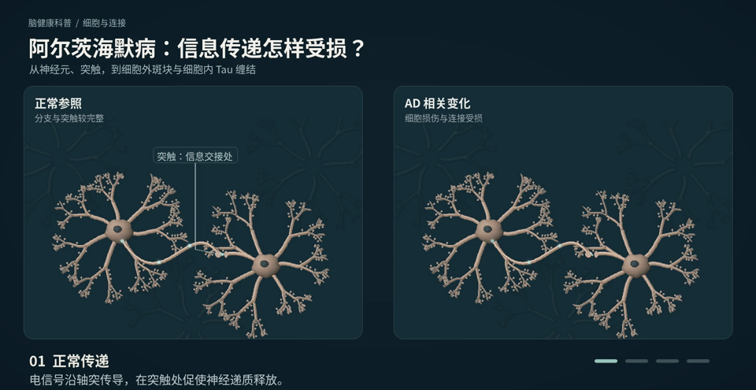

脑回变瘦，脑沟显得更宽
模型下方的标签提示当前观察重点
从全脑到不同脑区，再到细胞内部，逐层观察变化。拖动任一大脑，两个模型一起转动。点选内部结构，还能单独放大比较。
观看细胞与连接变化动画 ↓病程按钮不是年份刻度。“症状初现”与轻度可重叠；脑内变化可能早于症状多年。每个人进展不同，没有统一的“第1年脑图”或“去世前脑图”。四步均有递进形变；为便于肉眼比较，脑回变瘦与脑沟变宽的差异经过视觉增强。图示程度不对应临床分期测量。
32秒中文科普动画：对照观察正常传递、细胞外斑块、细胞内 Tau 缠结，以及连接受损。

点击“播放动画”开始，可观察视频进度条
机制示意，非显微实拍；四个分镜不表示固定发生顺序、病程或临床分期。科学依据：美国国立老龄研究所 NIA。
颜色、光点、分支数量与速度用于帮助理解，不对应患者测量。AD还涉及神经炎症等复杂过程。
解剖网格：Brain Project / Z-Anatomy / BodyParts3D © DBCLS，按CC BY-SA 4.0使用。已筛选、转码、平滑细分、着色，AD侧采用人工科普变形。
病程参考：Alzheimer’s Association：病程与阶段。
脑区与功能参考：Alzheimer’s Society：脑区与功能；AD皮质变薄的区域研究；后扣带回、楔前叶等区域研究。
科普依据：NIH / NIA：阿尔茨海默病如何改变大脑；海马萎缩与脑室变化研究。
正常侧为通用解剖图谱参照；AD侧的几何参数不对应任何临床萎缩率、固定年份或个体分期。海马与脑室按同一图谱的位置显示；“看里面”以半透明表面帮助定位，不是医学断层图。